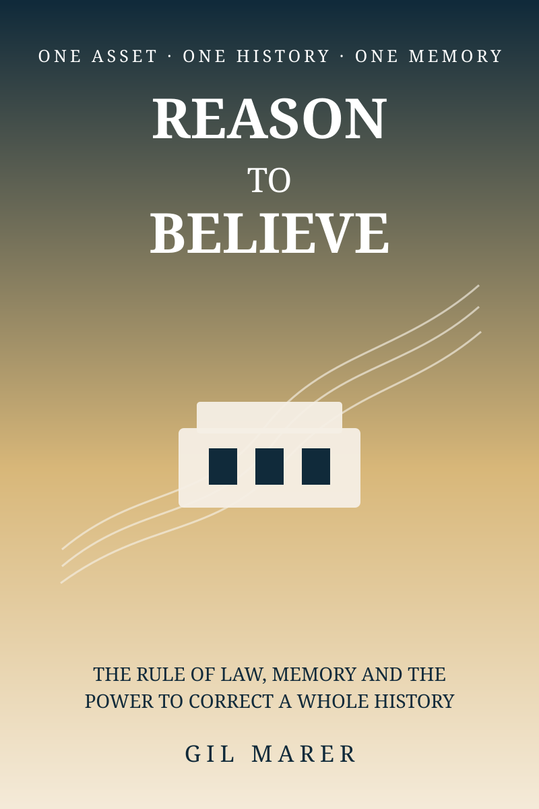
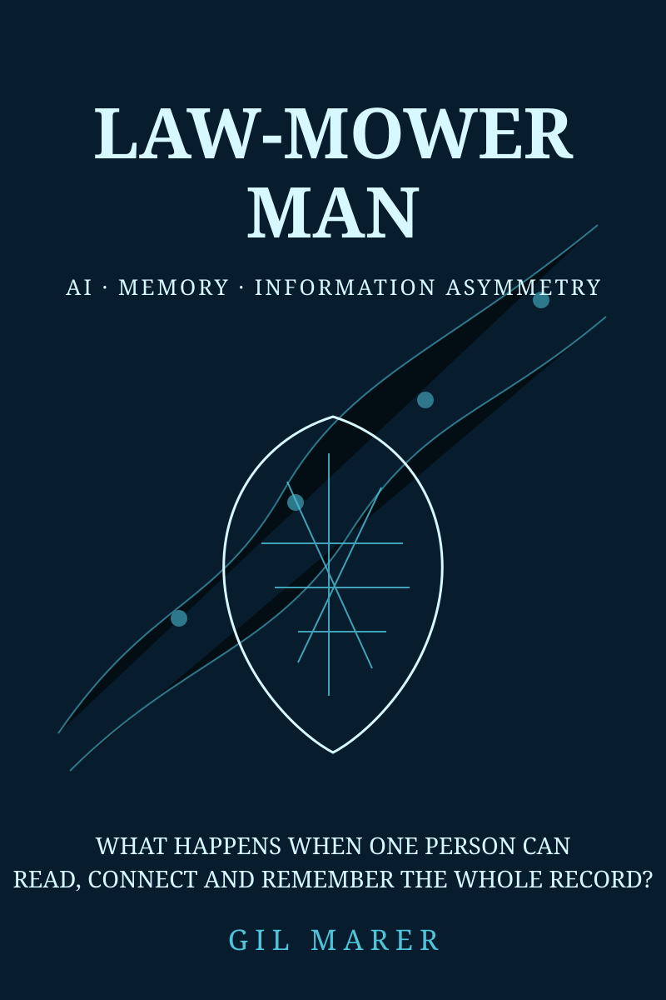
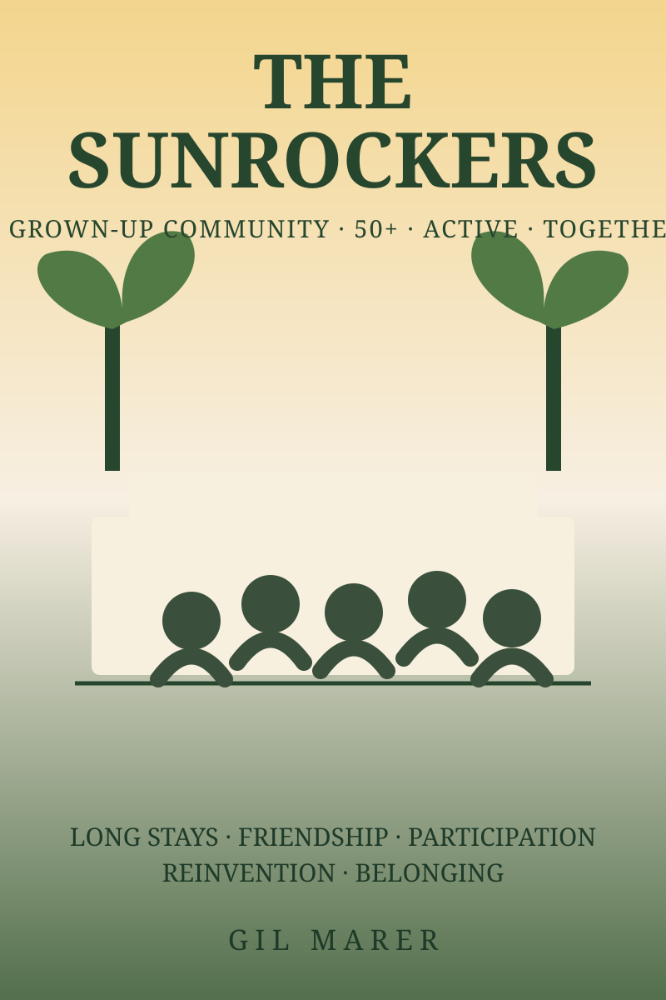
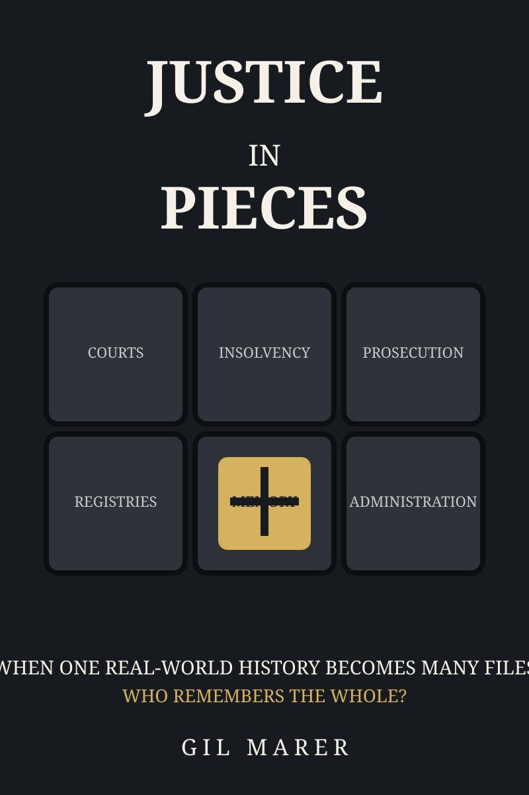
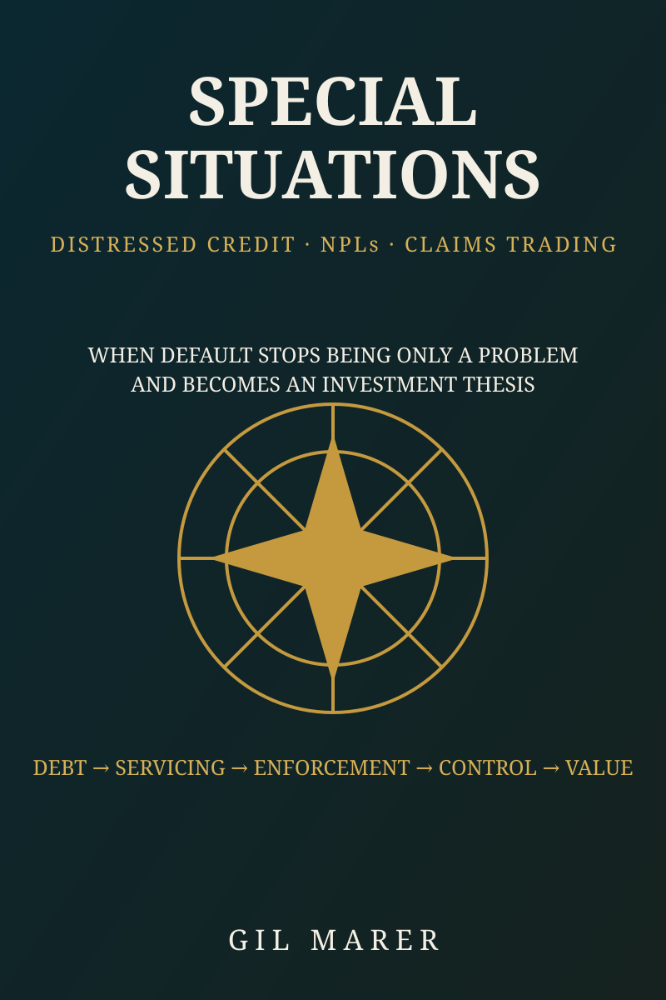

Libro principalRazón para creerUn activo. Una historia. Una memoria.
Una prueba documentada de si el Estado de derecho puede ver una historia económica completa, proteger derechos efectivos y corregirse después de años de fragmentación.
Abrir página del libro →

Libro 2Law-mower Man¿Qué ocurre cuando la IA puede leer el expediente completo?
Memoria jurídica asistida por IA, asimetría informativa y la nueva economía de reconstruir millones de palabras a lo largo de años de prueba.
Abrir página del libro →

Libro 3The SunRockers50+ · Adultos · Activos · Juntos.
La historia humana y comunitaria: estancias largas, amistad, participación, reinvención y pertenencia alrededor de Sun Park Living en Playa Blanca.
Abrir página del libro →

Libro 4Justicia en fragmentosCuando una historia se convierte en muchos expedientes.
Juzgados, Fiscalía, concurso, registros y Administración: qué hace la fragmentación con la memoria institucional y la tutela efectiva.
Abrir página del libro →

Libro 5Situaciones EspecialesCuando el impago se convierte en inversión.
NPL, compraventa de créditos, servicing, ejecución y el mercado poco visible en el que la deuda distressed puede convertirse en control y oportunidad.
Abrir página del libro →
 Libro 64 Green Houses, One Red Hotel
Libro 64 Green Houses, One Red HotelPropiedad. Asesoramiento. Consecuencia.
Un examen documental del asesoramiento profesional alrededor de un hotel en situación de alerta roja, incluida la posterior transición de asesor a actor acreedor-ejecutante.
Abrir página del libro →